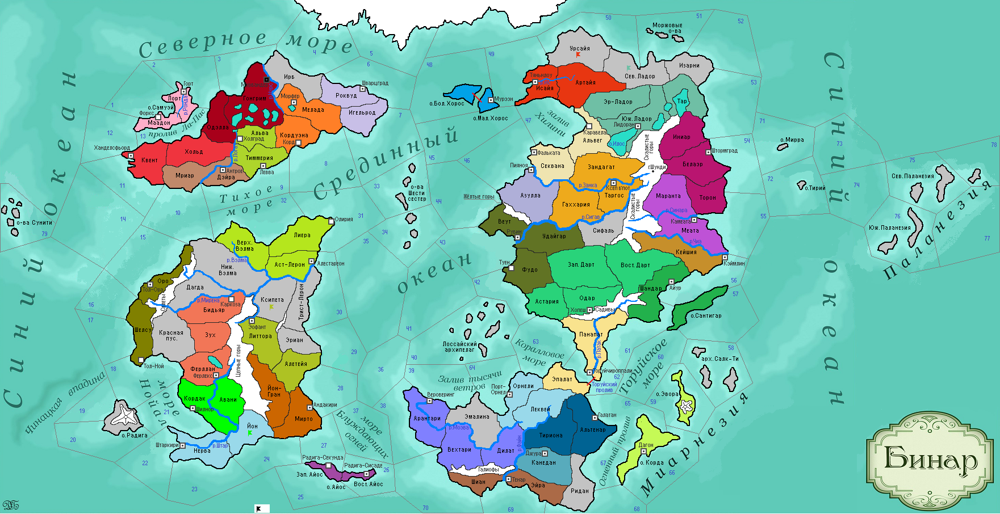

<==
| 3 |
| 4 |
| 5 |
| 6 |
| 7 |
| 8 |
| 9 |
| 10 |
| 11 |
==>

8-й ход истории мира Бинар (1135 г.)
· Среди корфелов укореняется пагубное пристрастие к спиртному. Войска Ферлустана освобождают столицу от мятежников.
· Идар I Полярный лис наследует трон Бьянфанга.
· Князь Темпеста Римуру I умирает. Трое его сыновей схватились друг с другом за власть в стране.
· Прах князя Парайо I развеяли над Торуйским проливом. Новый правитель – Воразун I.
· Войска Кордавы наносят поражение армии Штартизи и заставляют их отступить. Неожиданным маневром кордавский полководец Эгрик атакует провинцию Йон, за что получает в награду племенного скакуна.
· Войска Йонтари были разгромлены варварами в землях Эриана.
· Правители Вестервальда и Фриулеса заключают сепаратный мирный договор, разрывающий военный союз последнего с Одегоном. В г.Ханделсфьорде возводится Алтарь Св.Зигманда.
· Фриулес, в свою очередь, заключает военный союз с Феллердом.
· Ладорцы оставляют провинцию Изарни и захватывают Сев.Ладор.
· Князь Мирадоса Аристор I умер, оставив дочерей без наследства…
· Новым правителем Муад’оги становится Стелго-ялв, младший из сыновей покойного князя Нори-ярва.
· Аквилианское духовенство принимает догмат «Смирение».
· Квентил I возглавляет гос-во Дарт. Войны Андора со своими соседями завершаются перемирием. Дарт присоединяет к своим территориям Вост.Дарт.
· Хассе II продолжил правление династии Гальте в Одегоне. Хассе II запрещает жителям уходить в наёмники и направляет все ресурсы на оборону страны. Войска Одегона освобождают провинцию Одэлла.
· Жемар I – новый правитель Вейнара.
· Фам I возглавляет Ксеп Ха Хоц.
· Адепты Культа Мортис готовят проповедников для проведения религиозной пропаганды на других материках.
· Правитель Феллерда Кауш I объявляет войну Одегону, освободив Фриулес от исполнения союзнического долга. Войска Феллерда вступают в Гонгрим, где конница вязнет в болоте. Князь Кауш I падает с лошади и тонет в трясине… Вторая армия также не смогла пересечь эту труднодоступную местность и вынуждена повернуть назад.
· Основаны новые города: Корд (Форзерд), Радига-Секунда (Терра-Нуэва), Тол-Ной (Загорра)